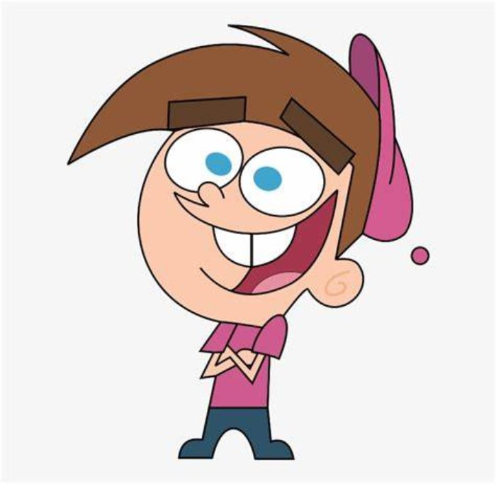
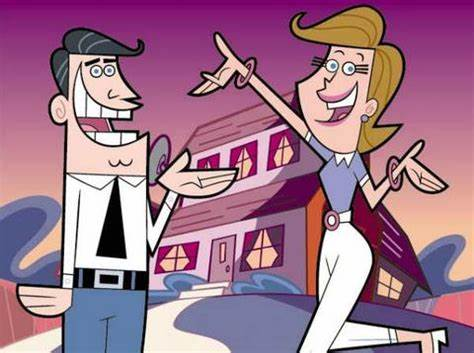
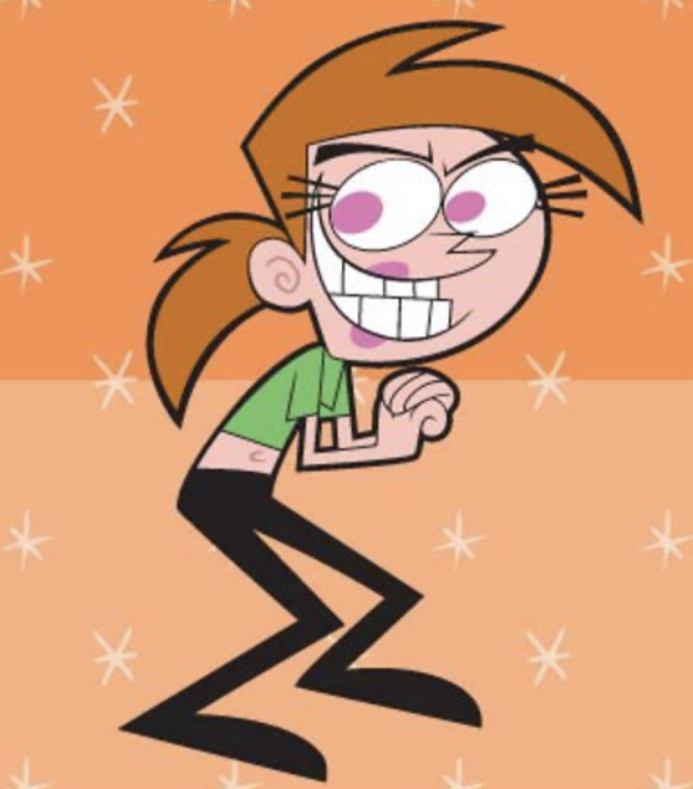

La Historia de un niño llamado Timmy Turner y sus pradinos magicos, Cosmo y Wanda.
«Los Padrinos Mágicos» es una serie animada que sigue las desventuras de Timmy Turner, un niño de diez años que es dotado con dos padrinos mágicos llamados Cosmo y Wanda. Estos padrinos tienen la tarea de concederle a Timmy cualquier deseo que tenga, aunque a menudo esos deseos resultan en situaciones caóticas y cómicas. La serie, creada por Butch Hartman, se desarrolla en la ficticia ciudad de Dimmsdale y presenta un elenco de personajes entrañables, incluyendo a los padres de Timmy y sus compañeros de escuela.
A lo largo de las temporadas, Timmy se enfrenta a desafíos típicos de la infancia, como la escuela y las relaciones con sus padres, pero también se embarca en aventuras mágicas y enfrenta antagonistas como el malvado Duende Jorgen Von Estrangle. La relación entre Timmy y sus padrinos mágicos es el núcleo de la serie, destacando temas de amistad, responsabilidad y las consecuencias de los deseos impulsivos. La premisa central de tener «padrinos mágicos» proporciona un lienzo creativo para explorar situaciones divertidas y mensajes positivos para el público infantil.



